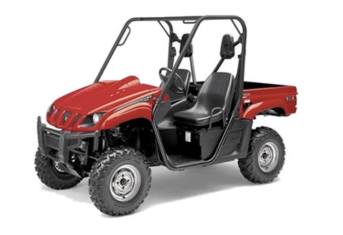
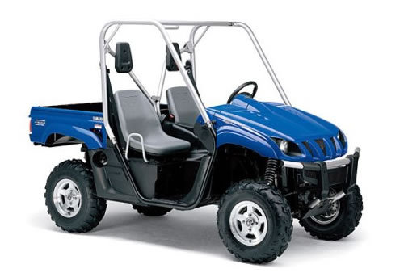
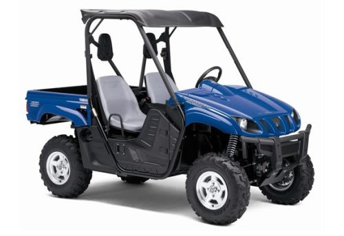

| Yamaha Rhino 450 service manual repair 2006-2009 YXR45F UTV | |
 |
Instant download of the factory repair manual for the 2006-2009 Yamaha Rhino 450 utv. Can also be used for newer models. 406 pages. |
 |
| Yamaha Rhino 660 service manual repair 2004-2007 YFR600FA UTV | |
 |
Instant download of the factory repair manual for the 2004-2007 Yamaha Rhino 600 utv. 417 pages. |
|
| Yamaha Rhino 700 service manual repair 2008-2009 YXR70 UTV | |
 |
Instant download of the factory repair manual for the 2008-2009 Yamaha Rhino 700 utv. Can also be used for newer models. 494 pages. |
|